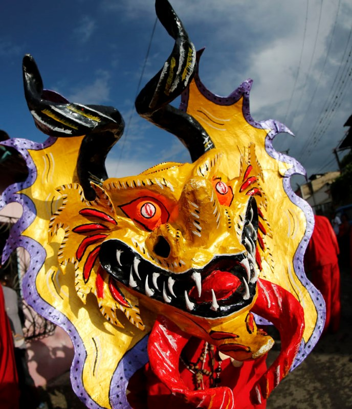
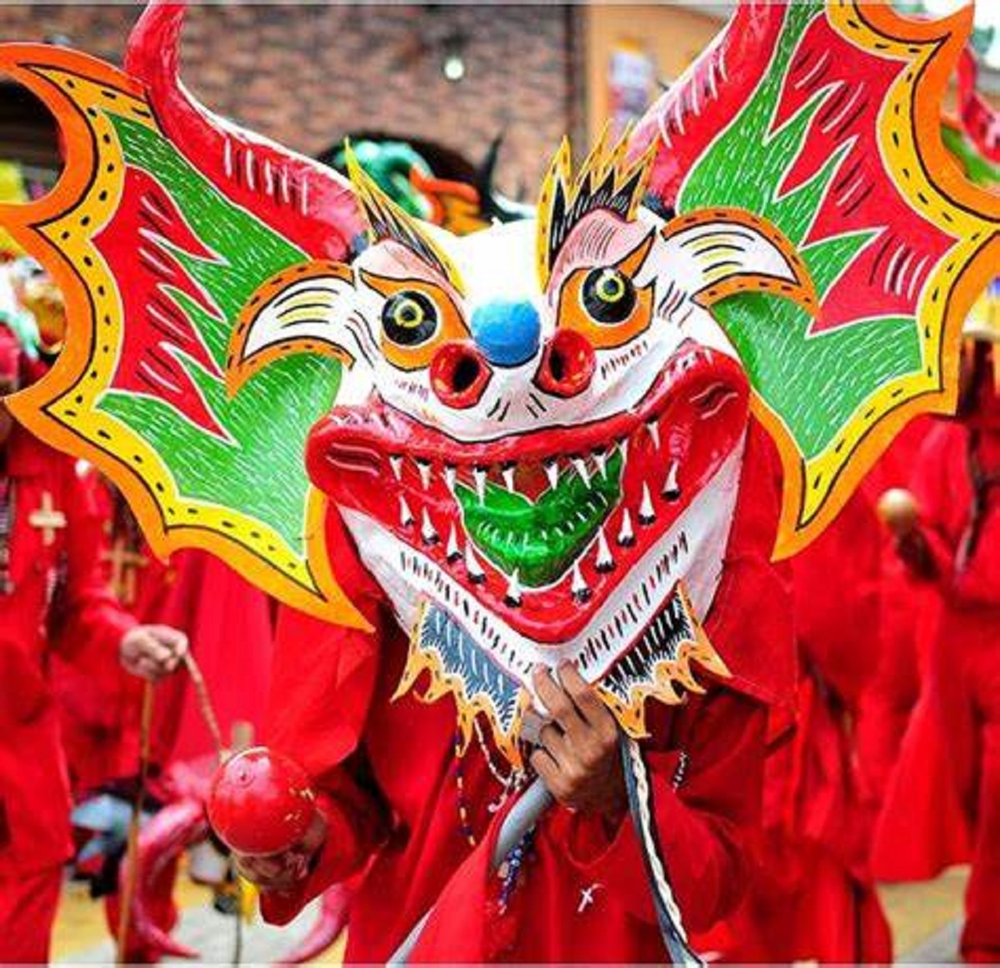
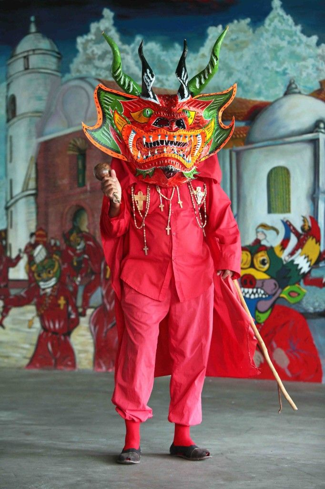
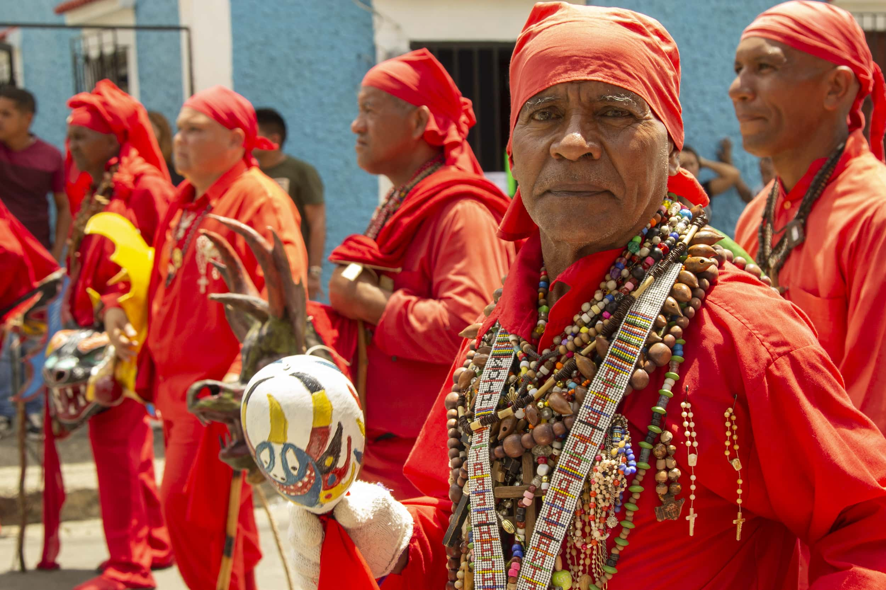

Cultura de Venezuela
Diablos Danzantes de Yare
Una tradición centenaria que fusiona fe, cultura y resistencia en Venezuela
Descubre su historia¿Que es?
Los diablos danzantes de yare son una manifestación cultural-religiosa donde se celebra el triunfo del bien sobre el mal,
llevada a cabo todos los años el jueves de Corpus Christi, donde con máscaras coloridas y trajes rojos los promeseros salen a
danzar por el pueblo de San Francisco de Yare para agradecer los favores concedidos al santísimo sacramento del altar.
Origen
Los Diablos Danzantes de Yare es una festividad religiosa que se celebra en la población de San Francisco de Yare, en el estado Miranda, Venezuela, cada jueves de Corpus Christi.
Esta tradición tiene sus raíces en el siglo XVIII, cuando los esclavos africanos y los indígenas se apropiaron de las festividades católicas impuestas por los colonizadores españoles, fusionándolas con sus propias creencias y rituales.
La hermandad de los Diablos de Yare es considerada la más antigua de Venezuela, con registros que datan de 1742. En 2022, la UNESCO declaró esta manifestación cultural como Patrimonio Cultural Inmaterial de la Humanidad.
La celebración representa la lucha entre el bien y el mal, donde los diablos, vestidos con coloridos trajes y máscaras, se postran ante el Santísimo Sacramento en señal de sumisión a la fe católica.


Máscaras
Las máscaras son el elemento más distintivo. Tradicionalmente se elaboran con papel maché y presentan expresiones terroríficas con cuernos, colmillos y ojos saltones.
Trajes
Los trajes son de colores vivos, principalmente rojo, amarillo y azul. Incluyen capas, pantalones anchos y están adornados con cruces, espejos y otros elementos simbólicos.
Accesorios
Los diablos llevan cruces, rosarios y otros símbolos religiosos. También utilizan maracas y otros instrumentos que hacen sonar durante la danza.
Significado de la celebración
Los Diablos Danzantes de Yare representan una síntesis cultural donde se mezclan elementos africanos, indígenas y españoles, creando una expresión única de sincretismo religioso.
La danza simboliza la lucha entre el bien y el mal, con los diablos representando las fuerzas del mal que finalmente se rinden ante el poder divino. Esta rendición se manifiesta cuando los diablos se postran ante la iglesia y el sacerdote los "exorciza".
La organización de la cofradía refleja estructuras comunitarias ancestrales, donde cada miembro tiene un rol específico y la tradición se transmite de generación en generación.
Esta festividad no solo es una expresión de fe, sino también un acto de resistencia cultural que ha perdurado por siglos, adaptándose a los cambios sociales mientras mantiene su esencia.
Impacto en la cultura
Esta celebracion ha sido tan emblematica en la cultura venezolana que incluso se ha referenciado en el consurso de miss universo en el año 2023, por la venezolana Diana Silva.